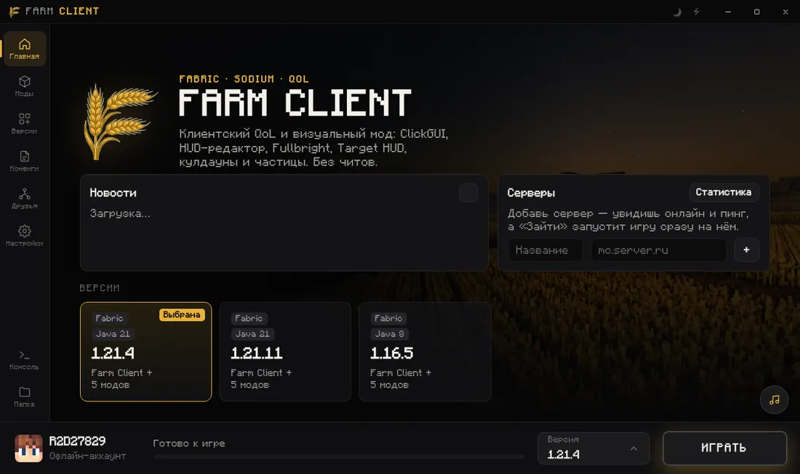

Farm Client
лаунчер и мод Minecraft
Farm Client объединяет лаунчер Minecraft и Fabric-мод: моды и сборки, друзья, кланы и мессенджер. Лаунчер бесплатный, доступ к моду — по выбранной лицензии.
Необязательный вход через Google помогает войти в Farm ID или привязать Google к существующему аккаунту. Данные профиля используются для авторизации. Политика конфиденциальности.

Всё, что нужно,
уже внутри
Ставишь лаунчер, жмёшь «Играть» — Java, моды, оптимизация и настройки подтянутся сами.
Одна кнопка до игры
Любая версия от 1.16.5 до 26.x, Fabric, Forge и Quilt. «Продолжить» последний сервер или мир в один клик, проверка конфликтов модов перед запуском.
Кланы
Роли, трофеи за часы в игре, заявки и клановый чат.
Мессенджер
Фото, видео, голосовые и приглашения в мир.
Высокий FPS
Sodium, Lithium и профили под твой ПК.
Моды и сборки
Modrinth и CurseForge в лаунчере, «Обновить всё».
Условия покупки
Лаунчер бесплатный — покупаешь лицензию на мод Farm Client.
- Цена и срок доступа — по выбранному тарифу в магазине.
- Привязка к ПК зависит от выбранного тарифа.
- Срок считается с момента активации: Настройки → Лицензия.
- Для запуска нужен интернет и действующая лицензия.
Farm Client в телефоне
Друзья, кланы и мессенджер всегда с тобой.
- Уведомления: новости, чат клана
- Запуск игры на ПК с телефона
- Галерея, кабинет и покупка ключа
Сборки для друзей
Код или файл .farmpack — у друга такая же сборка.
Игра по сети
Radmin VPN, ZeroTier, Hamachi: видно миры друзей.
Discord
Статус, «Присоединиться» и скрин в канал.
Облачные конфиги
Сменил ПК — все настройки на месте.
Скриншоты
Все версии в одном окне, отправка другу из игры.
Профиль игрока
Часы, клан, статус «в игре на сервере…».
Галерея
Темы, конфиги и сборки от игроков.
Горячие клавиши
Ctrl+Enter — играть, F1 — все сочетания.
Играй по-своему
Четыре настроения. Один Farm Client.
Переключай темы и смотри, как меняется весь интерфейс.

Интерфейс лаунчера. Данные в превью показаны для примера.
Простые цены
Лаунчер бесплатный. Лицензия открывает все модули мода — сначала попробуй бесплатно.
Пробный период
- Все модули Farm Client
- Только Minecraft 1.21.4
- Без карты и оплаты
Покупка и выдача кодов — на FunPay. Выбери предложение с нужным сроком и привязкой к ПК. Итоговая сумма зависит от способа оплаты и комиссий FunPay.
1500 Farm Coins за 100 ₽
Монеты для SHOP — отдельно от лицензии на мод. Оплата пока не подключена.
Посмотреть пакет →Что нового
Те же новости видно на главной в лаунчере.
Три шага — и ты в игре
Скачай
Windows: новый ПК — база 1.37.1, затем обновление 1.38.0. macOS — DMG, Linux — AppImage, Android — APK. Не удаляй пользовательские данные при обновлении.
Войди
Microsoft, Ely.by или офлайн-ник. Мастер первого запуска всё настроит.
Играй
Выбери версию и жми «Играть». Друзья и кланы — во вкладке «Друзья».
Частые вопросы
Можно ли использовать на любом сервере?
Какие версии Minecraft?
Где взять ключ?
Windows ругается на файл
Как запустить на Linux?
chmod +x FarmClient-*.AppImage и запусти. Если не стартует — поставь libfuse2 (sudo apt install libfuse2).Как играть с другом?
Скачать Farm Client
Актуальный выпуск — 1.38.0. На Windows для нового ПК сначала нужна база 1.37.1; обновление 1.38.0 запускается в прежней папке.
Установка с нуля и обновление →
Другие версии
Предыдущие релизы по системам. Старая версия лаунчера сама по себе не означает поддержку старой Windows.
Все релизы на GitHub ↗